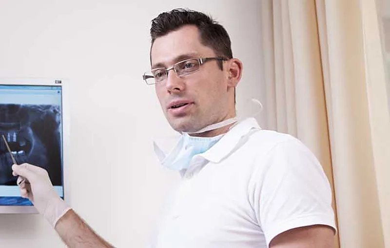

Nem tudja, mi kell?
10 000 Ftvizsgálat
Kezdje egy vizsgálattal. Az árát levonjuk, ha a kezelés nálunk történik.
Vizsgálatot kérek★ 4,8 · 39 Google-véleményPécs, Jókai u. 32.
Két fogorvos, egy családi rendelő a Jókai utcában: magánrendelés és a 30-as fogászati körzet ellátása. A főorvos mögött 30 év klinikai tapasztalat áll.
A rendelőben két rendelés fut: magánrendelés mindenkinek, és a 30-as fogászati körzet ellátása. Ha nem tudja, melyik az Öné, írja be az utcáját.
Egyéb igény esetén, megbeszélés alapján más időpontban is rendelkezésre állunk. A körzeti ellátás elsősorban berendelés alapján történik.
Elég az utca neve; ahol a körzet csak az utca egy részére érvényes, a házszámot is kérjük.
Kezdje el gépelni az utca nevét – a választ itt látja.
Alkotmány u. (1–65., 2–44.), Attila u., Barbakán tér, Báthory u., Dr. Boross István u., Forbát Alfréd u., Klimó György u., Kodály Z. u. (2–20., 1-től végig), Littke József u., Sánc u., Tábor köz, Tábor u.
A beavatkozásokat fájdalommentesen végezzük. Az ár mellé minden kezelésnél odaírtuk, mivel számolhat. Egészségpénztári számlát adunk.
Kezdje egy vizsgálattal. Az árát levonjuk, ha a kezelés nálunk történik.
Vizsgálatot kérekNem csupán a lyuk tömése a cél, hanem a fog formájának és színének helyreállítása. Igény szerint betét (inlay) is.
A gyulladt fogbél eltávolítása és a csatorna végleges tömése, általában 2–3 alkalom alatt.
Fémkerámia vagy fémmentes, cirkónium-oxid alapú pótlás, ideiglenes koronával a két kezelés között.
Műgyökér a hiányzó fog helyére, teljes érzéstelenítésben. A főorvos 1995 óta végzi.
Részleges vagy teljes, kivehető pótlás – rejtett, nyomógombos rögzítéssel is.
Ínyvérzés, ínysorvadás kezelése parodontológus szakorvossal – a folyamat megállítható.
Fogkőlevétel szájhigiénés tanácsadással; otthoni (éjszakai) fogfehérítés 75 000 Ft.
A le nem mondott, illetve 24 órán belül lemondott időpont díja félóránként 5 000 Ft. Az árak tájékoztató jellegűek; a pontos összeget a kezelési terv tartalmazza.
Egyetemi háttér, szakvizsgák és 30 év klinikai gyakorlat.
Főorvos, egyetemi docens, a 3T Dental vezetője
30 éves klinikai tapasztalat. Az implantációt 1995-ben, floridai tanulmányútján sajátította el, és Magyarországon az elsők között alkalmazta.

Fogorvos, parodontológus szakorvos
2004-ben évfolyamelsőként végzett a Pécsi Tudományegyetem Fogorvosi Szakán; a szakvizsgát kiváló minősítéssel tette le, 2015-ben parodontológiai szakvizsgát tett.
Asszisztens: Lőcziné Perei Andrea
Ha a pótlás rendeltetésszerű használat mellett eltörik, meglazul vagy megreped, díjmentesen helyreállítjuk. Feltétel: 6 havonta ellenőrzés és rendszeres fogápolás.
„A legjobb, legprofibb fogorvosi rendelő a városban … sosem félek odamenni.”
„Dr Tóth András nagyon alapos, precíz és kedves fogorvos. Rendkívüli szakmai tudással rendelkezik.”
„Normál árak, kiválló ellátás.”
Hagyja meg a nevét és a telefonszámát, és visszahívjuk egy időpont egyeztetésére.
Ha más kérdése van, hívja a rendelőt: 06 72 233 200.
A beavatkozásokat fájdalommentesen végezzük. Fontosnak tartjuk, hogy a megfelelő szakmai munka és odafigyelés oldja a páciensek félelmét, szorongását.
A fogorvosi vizsgálat 10 000 Ft, a kezelési terv 15 000 Ft; mindkettő levonásra kerül, ha a kezelés nálunk történik.
Igen. A kezelés után számlát kap, ennek alapján az egészségpénztár visszatéríti a számlán igazolt összeget.
Írja be az utcáját a körzetkeresőbe. A körzet lakóinak ellátása elsősorban berendelés alapján történik, időpontot telefonon kérjen.
Kérjük, legalább 24 órával előtte mondja le. A le nem mondott, illetve 24 órán belül lemondott időpont díja félóránként 5 000 Ft.
Igen: tömésre 2 év, rögzített pótlásra 3 év, kivehető pótlásra 2 év, implantátumra 5 év garanciát vállalunk, ha a páciens 6 havonta ellenőrzésen megjelenik és fogait megfelelően ápolja.
Eszközök, valamint elektronikus iratkezelési rendszer beszerzése a 3T Dental Kft.-nél (GINOP_PLUSZ-1.2.4-25-2025-00315). Támogatás: 6 590 210 Ft. A projekt keretében intraorális szkenner, foszforlemezes röntgendigitalizáló, autokláv és kompresszor került a rendelőbe.